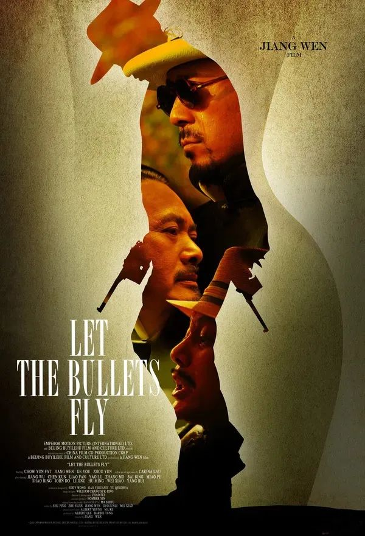
「你给我翻译翻译，神马叫做TMD的惊喜!」
毫无疑问，《让子弹飞》是一部寓意丰富的电影，或者说太丰富了， 以致于似乎每句台词都有玄机，也使得电影获得了票房和口碑的双丰收。 《让子弹飞》在某种程度上既是经典的，又是具有现代主义叙事特征的『西部片』，是用现代主义框架下容纳经典 好莱坞叙事的一个典范。影片在中国式的西部片特性中加入些现代性因素，同时在电影中又充满了『荒诞性的革命符号』， 使影片在传统和创新中找到了平衡，并把导演对当代文化的解读呈现给观众。 在《让子弹飞》中，枪支的存在可谓是尤其重要，导演姜文在影片中设计了一系列的暴力场面，但并不是为了暴力而暴力，而是为了合理化人物行为，推动情节的发展。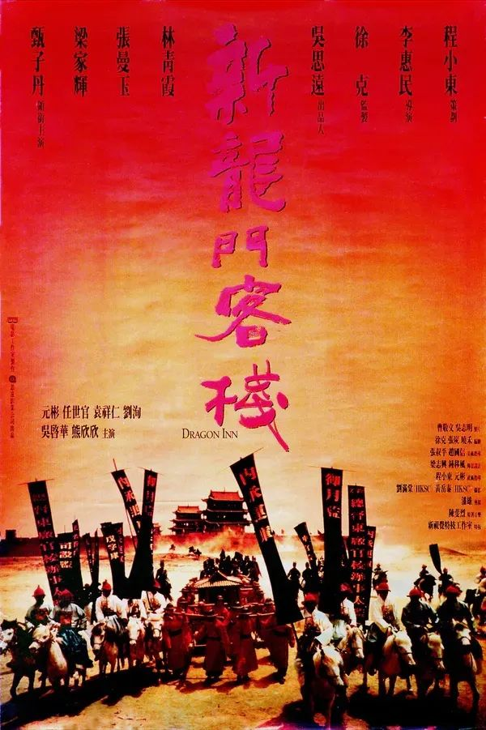
「嬉笑怒骂，调风动月。」
影片改编自胡金铨的《龙门客栈》。 电影背景基于明朝中叶，讲述了武林侠 士救助忠良之后，跟东厂高手在大漠龙门客栈发生尔虞我诈的遭遇战故事。 影片以高亢大气的 『西北风』述说了江湖儿女的恩怨情仇，无论是人物刻画抑或故事气度，在遵循传统武侠形制的基础上有所突破，开一派新武使的景致。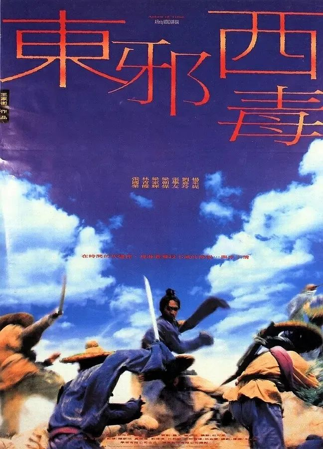
「诗一般的武侠世界。」
王家卫导演的《东邪西毒》，影片将故事发生地放置在榆林的沙漠中，连绵不绝的山丘与破败不堪的酒馆，几乎是影片所有的背景。 影片改编自金庸小说 《射雕英雄传》 讲述了欧阳锋的人生经历以及他和黄药 师、大嫂、洪七等人的故事。 这部电影已经把金庸的原著内容改的面 目全非，只是借用了原著中的名字而 已，这是带有强烈『王家卫肉格』的电影。电影里的镜头和台词很有深意，值得反复品位。 "风也未动，幡也未动，是人心自己在动。”人在茫茫宇宙面前微不足道，但每个人都会努力寻找一套试图去解释世界的方法，王家卫用来解释一切的是『情°』，也可以说是了“人心”』。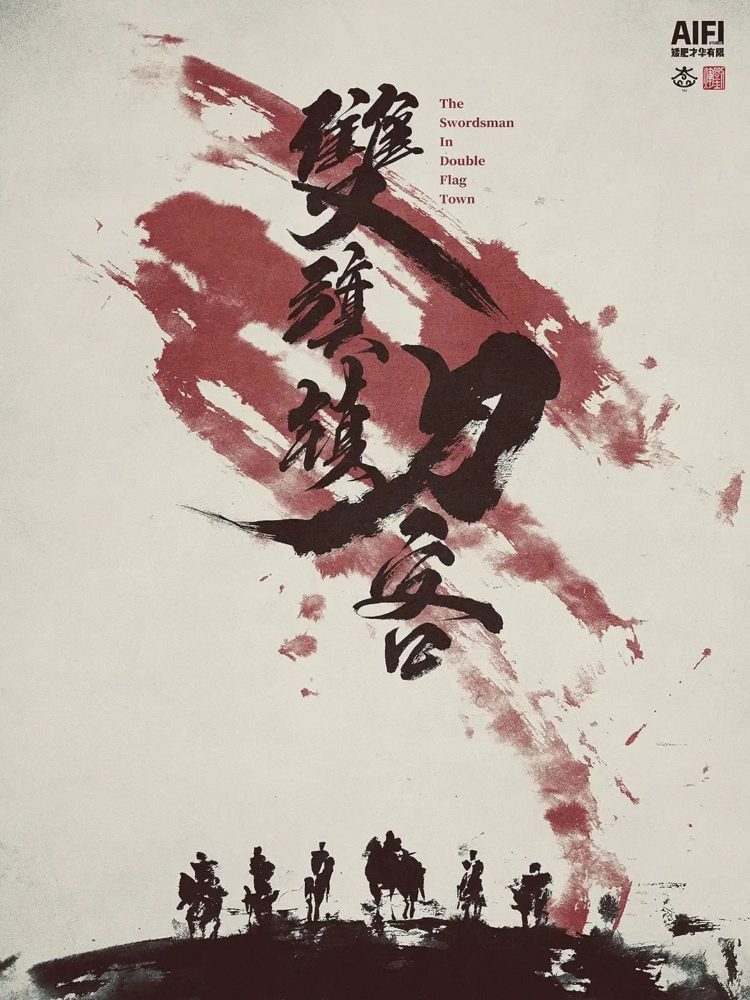
「中国语境下的西部片。」
这部影片可能在观众心目当中也不是那么熟悉，这是部被埋没的90年代『内陆 拍摄的西部片』。 影片讲述了男孩«孩哥”按照父亲遗嘱去 双頗镇娶与自己定过娃娃亲的好妹’时 遭遇士匪，最终杀死土匪为民除害的故事。 《双旗镇刀客》开创了『国内西部片的 先河』，此类型片先后在美国意大利繁荣衰落。 汤尼 雷恩高度推崇何平的《双旗镇刀 客》，认为是『何平的巅峰之作』，强调这部影片是不同于美国西部片和意大利西部片的独创作品。何平的《双旗镇刀客》中，刀客们身着 粗犷的羊皮装束，骑马在荒原驰骋，小镇居民们满面尘土，棉祆肥大，面色颓败。人物的造型与地域的背景融合，既使用了西部片的元素，体现了我国西部地区「粗犷、朴拙的风土人情』。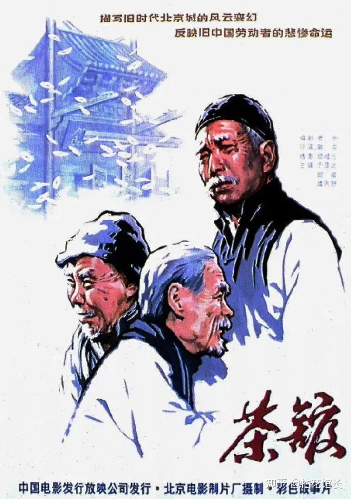
「“我爱咱们的国啊，可谁爱我啊！”」
世纪之交，古老的中国正迎来前所未有的巨大变革。老态龙钟的大清王朝摇摇欲坠， 六君子的鲜血无法阻止历史车轮的滚动，老北京城的上空风云变幻，波谲云诡。王利发（于是之 饰），北京城内裕泰茶馆的年轻掌柜。 他谨记父亲的教诲，体面周全地迎送四方宾客。小小的茶馆内，三教九流各色人等穿梭于此：提笼架鸟哀叹时运的松二爷（黄宗洛 饰）； 慨叹国之将亡的刚毅满人常四爷（郑榕 饰）；一心谋求实业救国的秦仲义（蓝天野 饰）；丧尽天良买卖人口的刘麻子（英若诚 饰）； 打算娶老婆的庞太监（童超 饰）……你方唱罢我登场，小小茶馆之内演尽世间的沧桑与凄凉……「“他们说：“我们停不下来 。”」
1976年7月27日夜，唐山地区爆发7.8级强烈地震，房屋倒塌，灾民无数。面对即将坍塌的危楼， 丈夫方大强（张国强 饰）和妻子李元妮（徐帆 饰）都要去救被困的龙凤胎儿女方登（张子枫 饰）、方达（张家骏 饰）。 危急时刻，方大强拦住了妻子，冲进去营救时不幸罹难。李元妮在震后发现，一双儿女被困在一块水泥板两端，若要营救，必然牺牲一方。 情急之下，她做出了艰难选择——救弟弟。此事成为方登心中难以磨灭的隐痛。后来，她被军人王德清（陈道明 饰）夫妇收养。 高考后，方登（张静初 饰）进入杭州医学院学习，并与研究生师兄杨志（陆毅 饰）产生了感情……方达被救却断了胳膊，李元妮以无私的母爱抚养他成人。 成年后的方达（李晨 饰）去杭州闯荡，娶了媳妇小河（王子文 饰），并干出了一番事业。32年后，这家人的命运却因为5·12汶川地震再次发生了交叠……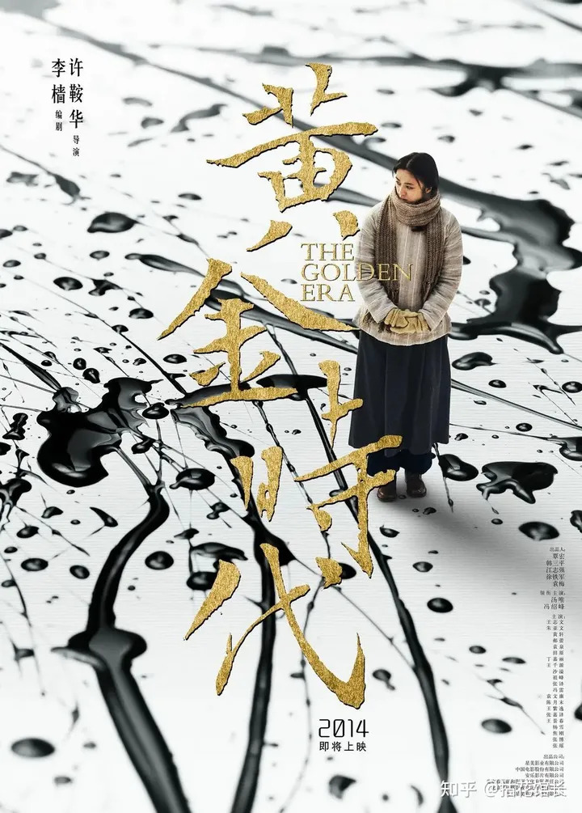
「“这不正是我的黄金时代吗？”」
20世纪30年代，20岁的张乃莹（汤唯 饰）逃婚求学，却惨遭抛弃。投靠未婚夫汪恩甲（袁文康 饰）后的张乃莹依然躲不开被抛弃的命运， 好在遇到了在报社工作的进步青年萧军（冯绍峰 饰），两人相知相爱。通过萧军张乃莹认识了女编辑白朗（田原 饰）、 罗峰（祖峰 饰）夫妻以及聂绀弩（王千源 饰）等文学作家，改名“萧红”后的她得到了鲁迅（王志文 饰）、许广平（丁嘉丽 饰）夫妇的首肯， 随后又结识了了胡风（冯雷 饰）、梅志（袁泉 饰）夫妇、蒋锡金（张译 饰）、丁玲（郝蕾 饰）、端木蕻良（朱亚文 饰）等人，在同时代作家的互相鼓励之下， 虽然战事不断、颠沛流离，萧红却逐步走向了创作的“黄金时代”。「天王盖地虎 宝塔镇河妖」
1947年冬，为了从土匪手中夺取控制东北九岭上万先遣军的分布图，东北民主联军203小分队队长少剑波（林更新 饰）委派侦查员杨子荣（张涵予 饰） 卧底潜入最大的土匪山头“威虎山”。杨子荣凭借自己的机智应变获得了匪首座山雕（梁家辉 饰）和座下八大金刚的赏识，被封为威虎山“老九”。座山雕天生多疑， 多次派人试探杨子荣，杨子荣一面与土匪多方周旋，一面涉险为山下战友传出情报。一波未平一波又起，被203小分队生擒的土匪联络副官栾平（杜奕衡 饰）趁乱逃脱， 知道杨子荣卧底详情的他竟出现在威虎寨中与杨子荣当面对质，杨子荣腹背受敌陷入全面危机......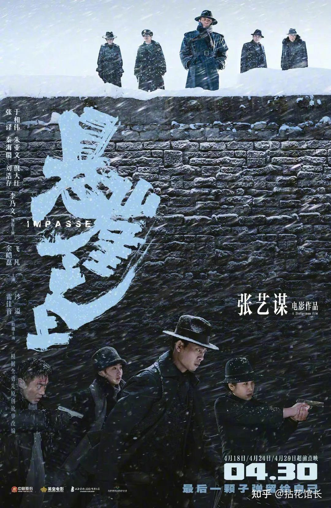
「有智识的观众并不是讨厌革命题材的电影，而是讨厌那些谄媚的嘴脸。」
上世纪三十年代，四位曾在苏联接受特训的共产党特工组成任务小队，回国执行代号为“乌特拉”的秘密行动。由于叛徒的出卖，他们从跳伞降落的第一刻起， 就已置身于敌人布下的罗网之中。同志能否脱身，任务能否完成，雪一直下，立于“悬崖之上”的行动小组面临严峻考验。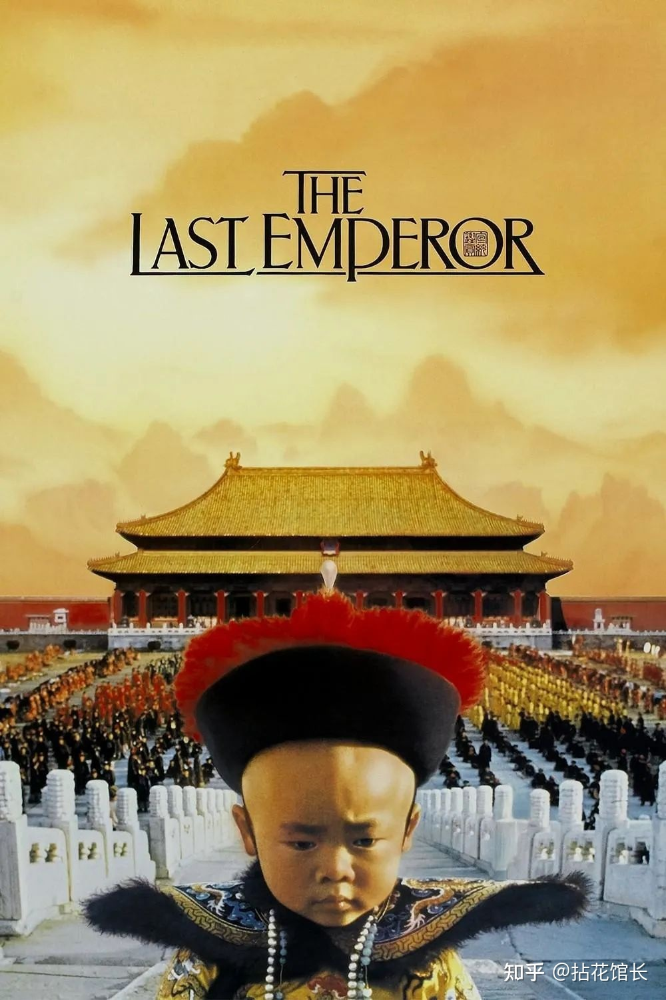
「中国没有真正的历史，只有朝代的轮回。」
溥仪（尊龙 饰）的一生在电影中娓娓道来。他从三岁起登基，年幼的眼光中只有大臣身上的一只蝈蝈，江山在他心中只是一个不明所以的名词。 长大了，他以为可以变革，却被太监一把火烧了朝廷账本。他以为自己是大清江山的主人，却做了日本人的傀儡。 解放后，他坐上了从苏联回来的火车，身边是押送监视他的解放军。他猜测自己难逃一死，便躲在狭小的卫生间里，割脉自杀。然而他没有死在火车上，命运的嘲笑还在等着他。 文革的风风雨雨，在他身上留下了斑斑伤痕。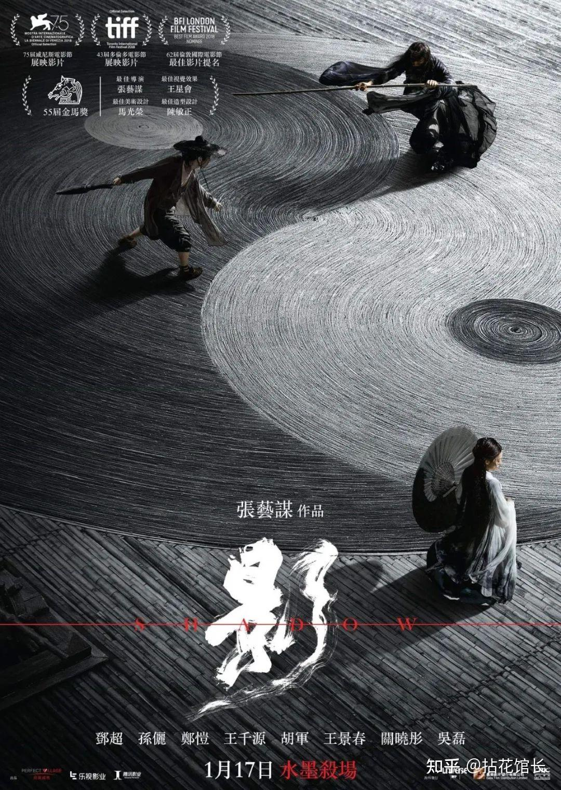
「正如万事万物，亦正亦邪、非空非有、不常不断。」
战乱年代，群雄并起。割据一方的沛国安于现状，一任国主沛良（郑恺 饰）慨歌太平。要冲之地境州早年为强邻炎国借去，而今据而不还。 沛国都督子虞（邓超 饰）前往讨伐，却中了对方大将杨苍（胡军 饰）的拖刀，重伤不愈。心有不甘的子虞暗中派出替身境州（邓超 饰）假扮自己，总理军政， 内则使令夫人小艾（孙俪 饰）襄助。真假子虞切磋战法，寻求破解杨苍刀法的绝技。而另一方面，沛良恼怒子虞私自约战杨苍，不惜将妹妹青萍（关晓彤 饰）嫁于杨苍之子为妾媾和。 淫雨霏霏，连日不开。境州上空，杀戮与机谋纠缠撕裂……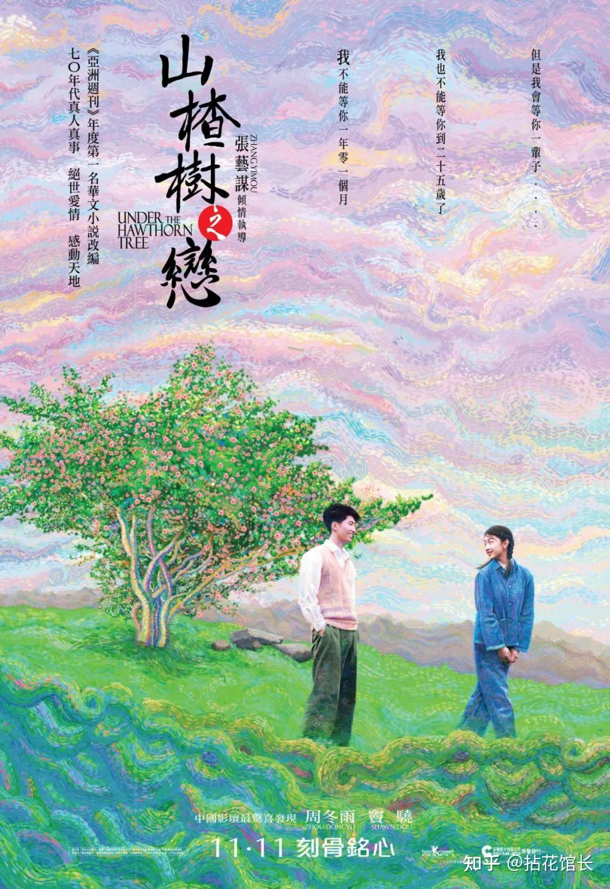
「刻骨铭心」
20世纪70年代初，响应毛主席号召，知识青年上山下乡。老师（成泰燊 饰）带着教育革命实践小组来到西坪村采风编教材。高中生静秋（周冬雨 饰）被安排在老村长（李雪健 饰）家， 村长媳妇（萨日娜 饰）介绍情况时，提到了一个名叫老三（窦骁 饰）的小伙子。他是地质勘探队成员，平日作业，很少回家。静秋对老三很好奇，终于两人相见，以山楂树为话题， 袒露心扉，互有好感。老三送她钢笔，陪她解忧，慢慢两人暗生情愫。但静秋返城时，听到老三有女友的传闻，态度骤冷。静秋的父亲被打成右派，母亲（奚美娟 饰）在劳动改造， 她和弟弟妹妹课余帮母亲糊信封，生活很艰苦。为了能留校，静秋还要辛勤打工。被误会的老三，只得暗暗想方设法帮助静秋，直到两人重归于好。但他们的事被静秋的母亲撞见了。 为了静秋的前途，老三在逼迫下许下了彼此不再见面的誓言……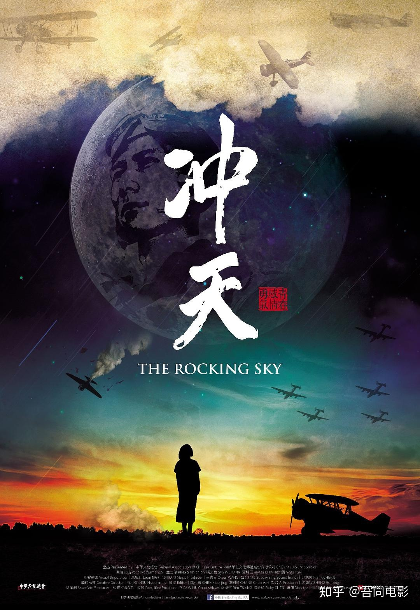
「“曾经有那么一群年轻人,每一次起飞都可能永别，每一次落地都必须感谢上苍。他们战斗在云霄。胜败一瞬间。他们必须无所畏惧，但也无所遁逃。”」
《冲天》是一部描述抗日战争时期中华民国空军的纪录片，以1937-1945年中国与日本之间的全面战争为大背景，来呈现一群年轻人的爱恋、荣耀与存亡。 曾经有那么一群年轻人，每一次起飞都可能永别，每一次落地都必须感谢上苍。他们战斗在云霄，胜败一瞬间。他们必须无所畏惧，但也无所遁逃。 他们是螺旋桨时代的最后一批战斗机飞行员，他们所面对的敌人，以及生死，都在目视可及的范围内，一如十九世纪的贵族决斗。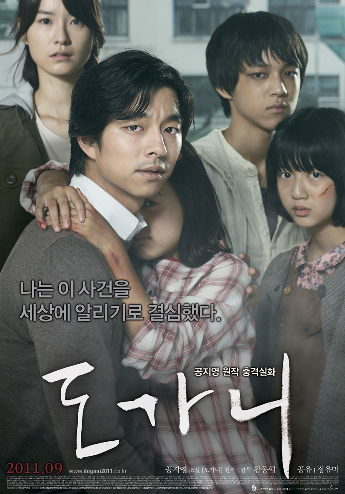
「无声呐喊」
《来自首尔的哑语美术老师仁浩（孔宥 饰）来到雾津，应聘慈爱聋哑人学校。天降大雾，他意外撞车，维修时邂逅了人权组织成员柔珍（郑有美 饰）。仁浩妻子早亡， 8岁女儿天生哮喘由祖母照看，所以他不辞辛苦谋职养家。然而，双胞胎的校长与教导主任竟逼仁浩索贿5千万韩元。同时，仁浩逐渐发现学校笼罩着一种紧张压抑的气氛， 令人窒息。有三个孩子引人关注：聪颖的金妍斗（金贤秀 饰）、贪吃的陈宥利（郑仁絮 饰）和弟弟自杀身亡的全民秀（白承焕 饰），民秀总是满脸淤青。下课后， 仁浩还听到女厕所中有呼喊与哭泣，在门卫的阻拦下他未深究。之后。他意外目睹了校长行贿警察，教导员毒打民秀，宿导溺罚妍斗的行径。一个惊天的隐秘被慢慢揭开，真相令韩国震惊…… 本片取材于2005年光州一所聋哑障碍人学校的真实事件，改编自韩国作家孔枝泳的同名小说。